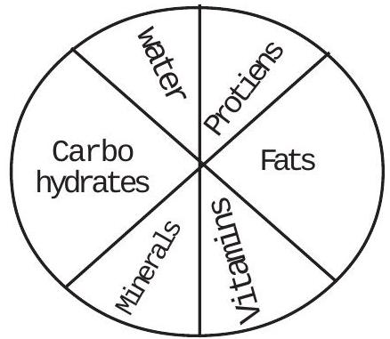
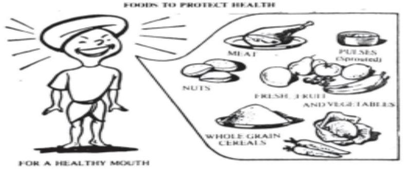
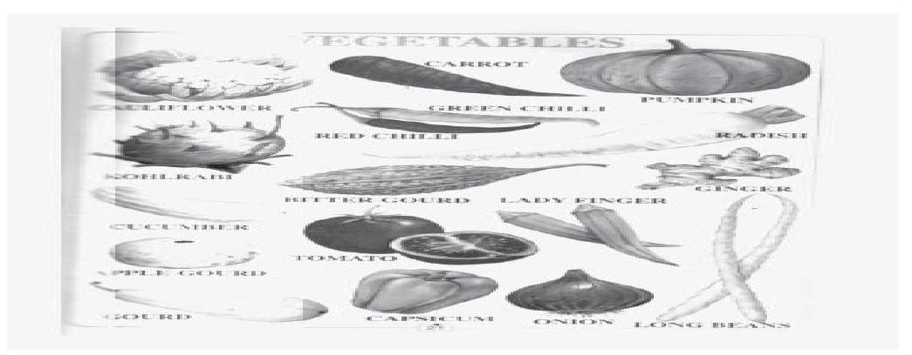
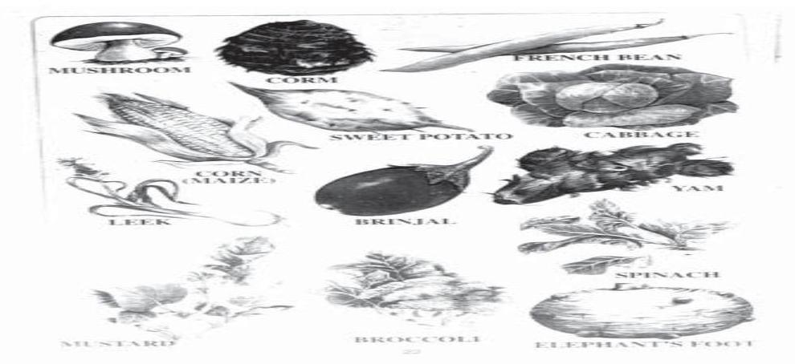
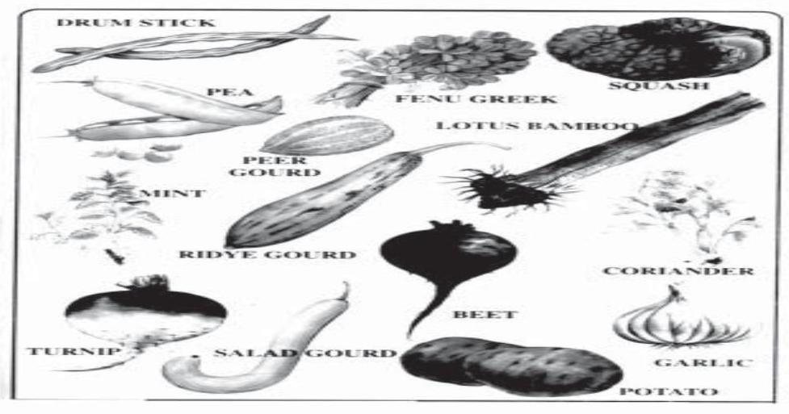
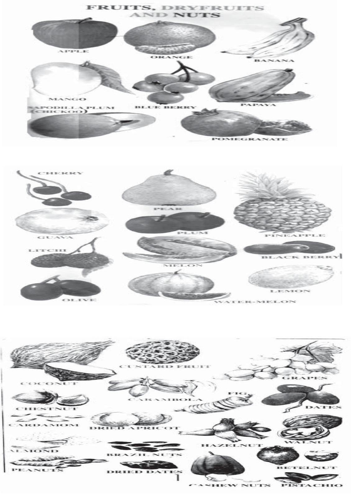

Section-B NUTRITION AND HYGIENE
UNIT - I NUTRITION
Introduction: -
Man kind eats to satisfy the feeling of hunger. Nutrition plays an important role in the promotion and maintenance of health and in the prevention of disease in order to keep well our bodies, need nourishment.
Just as a plant will not grow without water sun shine and proper manure, human beings also need food stuffs of different kinds of nourish to the body. Malnutrition and under nutrution are the greatest international health problems of the present day. A sound knowledge of nutrition is therefore essential for all community health workers. Nutrition deals with the way in which the human body receives and uses all the substances or materials necessary for its growth and devlopment and for keeping it is good condition.
DEFINITION: -
Nutrition may be defiend as the Science of food and its relation ship to health. It is concerned primarily with the part played by nutrients in body growth and development and maintenance.
The word nutrient or "food factor" is used for specific dietary constituents such as protiens, Vitamins and minerals. Dietics is the practical application of the principles of nutritution, it includes the planning of meals for the well and sick.
Good nutrition means "maintaining a nutritional status that enables us to grow well and enjoy good health.
Relation of Nutrition to Health: -
A person who does not eats the right foods or does not eat enough is malnourished and we call this s malnutrition also means that a child is less clever than he should be. The trouble may start even before birth if his mother does not have the right foods when she is pregnant. The malnouished child does not play but sits doing nothing. He is slow in learning to walk and talk. At school he is hungry, sleepy, dull and very slow to learn The children are slow in passing mile stones.
Good nutrition is a basic component of health. The relation of nutrition to health may be seen from the follwoing view points.:
1. Growth and development :-
Good nutrition is essential for the attainment of normal growth and development. Not only physical growth and development, but also the intellectual development, learning and behaviour are affected by malnutrition. Mal nutrition during pregnancy may affect the foetus resutling in still birth, premature birth and small for the dates babies. He is under weight because of not haiving enough of the kind of foods needed for growth. Good nutritions is also essential in adult life for the maintanance of optimum health & afficiency. So nutrition affects the individuals health from birth to death.
2. Specific deficiency :-
Malnutrition is directly reasponsible for certain specific nutritional defeciency diseases. The commonly reported ones in India are Kwashiorkar, marasmus, blindness due to Vitamine A deficiency anaemia, beri-beri, goitre etc., Good nutrition therefore is essential for the prevention of specific nutritional defeciency diseases and promotion of health.
3. Resistance to infection :
Malnutrition predisposes to infections like tuberculosis. It also influences the course and out come of many clinical disorders. Infection, in turn, may aggravate malnutrition by affecting the food intake.
4. Mortality and Morbidity :-
The Indirect effects of Malnutrition on the community are even more striking a high general death rate, high infant mortality rate, high sickness rate and a lower expectation of life. Over nutrition, which is another form of malnutrition is responsible for obesity, diabetes, hypertension, cardiovascular and renal diseases, disorders of liver and gall bladdar.
More recent reports suggests that diet perhaps plays an important role in certain types of gasto intestinal cancers. It is now quite well acceptable that diet and certain diseases are interrelated.
Here is a comparision of the effects on people of good nutrition and malnutrition:
| Good Nutrition | Mal Nutrition |
|---|---|
| 1. Correct weight for height and age | weight too much or too little |
| 2. Strong Muscles | Weak muscles. |
| 3. Limbs straight. | Bow - legs or knock, knees. |
| 4. Smooth, clear skin, mucous membrances a good colour | Skin dry and rough, mucous membranes pale |
| 5. Healthy, bright eyes; clear sight sight or loss of sight. | Eyes dull; night blindness ; poor |
| 6. Hearing good. | Hearing poor. |
| 7. Breathing unobstructed. | Mouth breathing ; adenoids. |
| 8. Teeth well formed, and free fron dental caries. | Uneven teeth; dental caries; spongy gums. |
| 9. Tonsil clean and small | Tonsils enlarged, often sore. |
| 10. Erect posture in sitting, standing and walking. | Round shouldered ; twisted spine; protruding abdomen. |
| 11. Nerves steady; expression calm and cheerful, quick to learn. | Nervous, anxious, irritable, slow to learn. |
| 12. Plenty of energy | Tired and listless. |
| 13. Good resistance to infections | Poor resistance to infections. |
Relation of other factors of importance for nutritional status and health.
There are many other factos which affect the nutritional status of the health of the individual. The most important of which are:-
1. Surface area of the body :-
The larger the surface area of the body in relation to bulk, the greater the use of (Nutrition) diet. Eg. : - A tall man lost his energy more when compare to short man with same weight. So the tall need and should eat more compare to short fat man of the same weight.
2. Sex:-
Energy using by the body surface area in men is more compare to the women. So the calory requirement is also more in men than women.
40 calories per Sq. Metre per hour for men.
37 calories per sq. metre per hour for women.
3. Age:-
Growing children and adolescents need more diet than adults.
4. Diseases :-
Some diseases, especially thyriod gland, may increase or decrease the basal metebolic rate. So the intake of food also increases or decreases in thyriod problem cases.
5. Under Prolonged or Chronic under nutrition the diet intake is decreased.
6. Psychological or emotional tension caused by worries or stress will increase the intake of diet.
FUNCTION OF FOOD :-
- For growth or body building, and for repair of tissues protein foods mainly used.
- To provide energy for doing work staple foods and fats.
- To help the body to function properly and to protect from disease Vitamins and minerals.
On the basis of the above funtions foods have been classified as:-
- Energy Yielding foods: - These are rich in carbohydrates and fat. Eg. Rice, wheat, potatoes, cereals, roots and tubers sugar, fats and oils.
- Body building foods: - These are foods rich in protein, eg: Milk, eggs, meat, liver, fish, pulses, oilseed cakes.
- Ptotective Foods: - These are foods rich is Vitamins and minerals and protiens, eg: - Milk, green leafy vegetables. Protective foods are so called because they protect the body against infection, disease and ill health. It may be mentioned that diets in India are generally poor in protective foods.
A balanced diet must contain foods from the above three groups:-
Constituents of Food: -
The dietary constituents of food are shown below: -
Proteins, fats and carbohydrates are called "Proximate Prinicples" or energy yielding foods. Together with water. They form the bulk of food. The human body has the following approximate.
| Water | 63 Percent. |
| Protein | 17 |
| Fat | 12 |
| Minerals | 7 |
| Carbohydrates | 1 |
Classification of foods:-
There are many ways of classifying foods:-
1 Classification by Origin
- a) Foods of animal origin.
- b) Foods of vegatable origin.
2 Classification by Chemical composition:-
- Proteins
- Fats
- Carbohydrates
- Vitamins
- Minerals.
3 Classification by predominant function:-
- Body building foods Eg. Milk, meat, poultry, fish eggs, pulses, groundnuts, etc.,
- Energy giving foods Eg. Cereals, Sugars, Roots, and tubers, fats and oils.
- Protective foods:- Eg.: Vegatables, fruits, milk.
4 Classification by nutritive value: -
- Cereals and millets.
- Pulses (Legu mes)
- Vegatables.
- Nuts and oilseeds.
- Fruits.
- Animal foods.
- Fats and oils.
- Sugar and jaggary.
- Condiments and spices.
- Miscelleneous foods.
Nutrients
Nutrients are organic and inorganic complexes contained in food. There are about 50 different nutrients which are normally supplied through the foods we eat. Each nutrient has specific functions in the body. Most natural foods contain more than one nutrient. These may be devided into
1. Macronutrients: -
These are proteins, fats and carbohydrates which are often called "Proximate Principles" because they form the main bulk of food. In the Indian dietary, they contribute to the total energy intake in the following proportions.
- Carbohydrates 65-80%
- Fats 10-30%
- Proteins 7-15%
2. Micro Nutrients :-
These are vitamines and minerals they are called "Micro Nutrients because they are required in small amounts which may vary from a fraction of a milligram to serveral grams.
Carbo hydrates
Energy foods and calories:-
Carbohydrates are composed of carbon, hydrogen, and oxygen. A continued need of the body is for energy foods are fuel for the body to work rather like diesel is fuel for a bus to run. The harder you work, the more energy food you need, but evenat rest. The bodystill uses fuel for breathing and for the heart beating. By burning fuel foods for energy, heat is also produced. In cold weather you can keep warm by exercise and eating more energy foods.
They are cheapest sources of energy and are the basis of our diet Indian diets are characterised by excessive amounts of Carbohydrates, providing as much an 90% of the required calories. In balanced diet, carbohydrates provide 50-60% of total calories taken in excess, the carbohydrates are converted into body fat.
The kind of staple food we eat depends on our habits and what is available, staple foods includes.
- Cereals and grains:- Wheat, made into bread, Chappati etc., Rice, jowar, maize, and ragi (The millets)
- Starchy Vegetables, Potatoes, Sweet potato, and tapioca.
- Starch fruits, banana, bread fruit,
Sugars, honey and jaggary provide extra energy. These too are carbohydrates foods.
Body requirment :-
Carbo hydrates requirement for children 60-250 grams.
Adolescents 400 grms.
Men 300-700 grms.
Womens 240-540 grms.
Proteins
The word "Protein" means that which are essential for growth; for making different kinds of cells, tissues and organs of the human body. Proteins are composed of carbon, hydrogen, oxygen, nitrogen and sulphur in varying amounts. From this we can understand why pregnant women, nourishing mothers, babies and children all needs to have a lot of proteins in their diet. Those who are injured or have same disease which attacks body cells, need extra protien for repair of tissues that have been harmed. Every one needs protein because our bodies are made up of living cells whcih wear out and need replacing.
For Eg. :- The life of red blood cells is only about 120 days. New red blood cells need to be produced constantly.
Proteins differ from carbohydrates and fat in the respect that they contain nitrogen . Proteins are made up of simple substances called amino acids. These are building blocks of proteins.
AMINO ACIDS: -
There are many different proteins and each one is made up of a group of about 100 amino acids. There are about 20 different kinds of aminoacids. we can think of them as beads of different colours joined together to make a chain or necklace (a protein). A protein is like a necklace rolled into a ball, but so small we cannot sœit.
When we swallow a protein food, first the proteins seperate, then the protein chain is broken and amino acids sepereated. Inside the body the new proteins are formed by joining up the amioacids in a different order, accoridng to needs of the body.
The body can make some amoniacids out of others, and these are called "non essential" amino acids. About 8 aminoacids cannot made by the body and must be taken in our food. These 8 are the essential aminoacids.
- Isoleucine
- Leucine.
- Lysine
- Methionine
- Phenylalamine.
- Threonine
- Trypto phane
- Valine.
Functions:-
- For growth and development :- They furnish the building material
- For repair of body tissues and their maintenance: - It has been shown that the body proteins are constantly being broken down. They have to be replaced for which fresh protein make is required.
- For synthesis of antibodies, enzymes and harmones: Antibodies, Enzymes and harmones contain protein. The body requirs protein to produce them. .
Sources :-
There are 2 main sources of protein.
- Animal sources :- Milk, eggs, meat, fish, etc.,
- Plant sources :- Pulses, cereals, nuts, etc., other chana, soyabean etc.,
| Food | Protein (G. per 100 gms. of food) |
|---|---|
| Animal Foods: | |
| Milk | 3.2-4.3 |
| Meat | 18.0-26.0 |
| Egg | 13.0 |
| Fish | 15.0-23.0 |
| Plant foods: | |
| Cereals | 6.0-13.0 |
| Pulses | 21.0-28.0 |
| Vegetables | 1-4 |
| Fruits | 1-3 |
| Nuts | 4.5-29.0 |
| Soya bean | 43.2 |
| Others: - | |
| Oils and fats | Nill |
| Sugar and jaggary | Nill |
Protein requirements: -
The requirements of proteins as per body weight. The Indain Council of Medical Research in 1981, recommended 1.0 g protien 1 kg . body weight for an Indian adult.
Fats:
Fats are composed of Carbon, hydrogen and oxygen. They are composed of smaller units called fatty acids. Some fats such as ground nut oil, gingerly oil are liquid at room tempertaure.
Classification of Fats
- Saturated fats. Eg. Animal Fats.
- Un saturated fats. Eg. Vegetable oils and fats.
Current research indicate that excessive intake of saturated fat is harmful to the body.
Functions:-
Fats Serve the following functions.
- Fats provide energy. A grame of fat provide 9 calories of energy i.e., twice the number of calories from carbohydrates and proteins.
- Fats are carries of fat soluable vitamins. Eg. : Vitamine A, D, E, and K .
- Dietary fats supplies essential fatty acids are needed for growth and maintenance of the integrity of the skin.
- They maintain our body termparature.
- Fats provide support for many organs in our body such as heart, kidneys, intestive etc.
- Foods containing fats are tasty.
Sources
Dietary fats are derived from 2 main sources.
- Animal sources :- These are Ghee, butter, fat of meat, fish oilsetc.
- Vegetable sources : - Various vegetable oils such as ground nut oil, ginger oil , mustard oil, cotton seed oil and coconut oil.
Fat requirments:-
Adult requires 20-60 grams 1 day.
Calories are used to measure energy. We use calories to measure how much energy is there in certain foods. We use calories also to measure how much energy a person needs(energy requirements)
Nutrients that provide calories, and the amounts are as follows:-
- One Gram of Carbohydrate provides 4 calories.
- One Gram of proteins provides 4 calories.
- One Gram of fats provides 9 calories.
Note that proteins are not including in "energy foods" because their main use is for body - building; what is left over from requirements for body building and repair can be used as fuel for energy.
Here are some foods, and the caloreis provided per 100 gms.
- Cow's milk 65
- Buffalo'smilk 117
- Jaggery 383
- Honey 320
- Sesame seeds 564
- Groundnuts 549
- Banana 153
- Tapico 159
- Sweet Potato 132
- potato 99
- Wheat Bread 238
- Wheat Flour 348
- 1 Chappati 124
- Rice 345
- Ragi 331
- Maize 342
- Bajra 360
Calorie Requirements (energy requirements)
- A baby below 6 months needs 120 Calories per kg. of body weight per day.
- A baby from 7 to 12 months needs 100 calories / Kg.
- A Child 1-3 years old needs about 1200 calories per day.
- A child 4-6 years old need about 1600 calories per day.
- A child 7-9 years old needs about 1800 calories per day.
- A child 10-12 year old needs about 2100 calories per day.
- An Adolescent girl 13-19 and boy 13-15 - 2300 calories per day.
- An adolescent boy 16-19 years need 3000 calories per day.
- A man moderately active needs 2800 calories per day.
- A woman an moderately active need 2200 calories per day.
- A women who is pregnant need extra 300 calories per day.
- A women who is lactating needs extra 500 calories per day.
| Functions | Sources | Daily Requirement | Grams | Remarks | |
|---|---|---|---|---|---|
| CARBOHYDRATES: | |||||
| 1 | Energy or fuel for the working of the body. | Careasls: Rice, Wheat, Jowar, Maize, ragi. | Infant below 6 months Infant 7-12 months |
60-80 100-150 |
Carbohydrates requirement for Children is based on age. In adults requirement depends on age, body weight and daily. Activity, Adults should aim to keep the body weight steady. In pregnancy and lactation, more carbohydrates is required. |
| 2 | Produce Heat. | Sugars: White sugar, jaggery, honey, glucose | Child 1-3 years Child 4-6 years |
160-200 200-250 |
|
| 3 | Help in use of fats and proteins | Root vegetables : Potato, sweet potato, tapioca | Child 12 years Adolescent boys |
400 450-550 |
|
| 4 | Cellulose (Fibre) prevents constipation | Fruits: Banana, breadfruit. | Man Woman |
300-700 240-540 |
|
| FATS: | |||||
| 1. | Absorption of Carotene and Vitamins A,D,E, and K. | Best sources for good health are : Sesame (gingelly) oil. Sunflower seed oil, cottonseed oil soyabean oil. Other sources : ground nut oil coconut oil, mustard oil. Vanaspathi, butter, ghee, cheese, milk, curds, fish, and fatty meat. | Child 1-3 years Child 4-6 years |
35-40 20-40 |
Animal fats contain cholesterol. and so they are not good for middle aged persons, who may development heart diseases. could have skimmed milk instead of whole milk. |
| 2 | Reserve fuel for energy. | Child 7-9 years | 50 | ||
| 3 | Makes food tasty and satisfies the appetite. | Adolescent boy Man |
30-70 20-60 |
||
| 4 | Fast stored in the body protects from cold, and is a reserve source of energy. | Woman Lactating woman |
20-40 20-60 |
||
| PROTEINS | |||||
| 1. | For growth (body-building) | Vebetables proteins: are best Cereals, pulses, (dhals and grams) legumes(peas and beans) oilseeds. |
Infant below 6 months about | 2 gm/kg. | More protein compared with weight is required for those who are growing or nourishing achild. Less protein for weight is required for adults. |
| 2. | Repair of worn out tissues and Cur healing of wounds. | infant 7-12 months about | 1.5 gm./kg. | ||
| Child 4-6 years. | 22 | ||||
| 4. | For making enzymes (for digestion) and hormones. | Woman | 33 55 |
||
Vitamins: -
Vitamins are complex chemical substances they are required by the body in very small amounts. They donot yeild energy like fats and carbohydrates. They are vital for the very survival of man. They protect the body against ill health, infection and disease. Since the body can not manufacture vitamins, they must be supplied through the diet. A well balanced diet almost meets the daily requirement of vitamins needed by the body.
Classification :-
Vitamins are classified into two broad groups as below: -
- Fat soluble vitamins.
- a) Vitamin A or retinol.
- b) Vitamin D
- c) Vitamin E
- d) Vitamin K
- Water soluble Vitamins.
- a) Thiamine (Vitamin B1)
- b) Ribo Flavin (Vitamin B2)
- c) Nicotinic Acid (Niacin)
- d) Pyridoxine (Vitamin B6)
- e) Pentothenic Acid
- f) Folic acid
- g) Vitamin B12
- h) Ascorbic acid (Vitamin C)
Vitamine A (Retinol)
It is a fat soluble vitamin. Its chemical name is "retinol" 8% of children between the ages 6 months and 6 years had vitamin A defeciency signs. In some countries, including India vitamin A is a major cause of preventable blindness.
If a person does not have enough vitamine A1 he gets night blindness, then dry eye, and may become blind.
Functions:-
- It is needed for normal vision. and health of the eyes.
- It is needed for health of the epithelial tissues (skin, mouth) of the body.
- It is connected with growth, especially skeltal growth.
- It is anti - infective i.e, it protects the body against mecrobial infection.
Sources:-
- Animal Sources :- Butter, ghee, egg, milk, liver and fish are good sources of vitamin A.
- Vegetables and fruits: - The cheapest sources of Vitamin Ais green leafy vegetables such as spinach, amaranth, coriander, drum-stick-leaves. Vegetables like- Carrots, pumpkin, and ripe fruits are mangoes, papaya, tomatoes are also rich sources. The foods contain carotene content are converted into Vitamin A in the walls of the small intestine and after wards stored mainly in the liver.
- Fish liver oils 1 table spoon of cod or shark liver oil supplies about 6,000 Iv of vitamin A.
- Synthetic: - Indian lemon grass has been established in the country.
Daily Requirement:-
1 IV of vitamin = 0.3 Wg . retional.
Daily requirement of vitamin A is 300-750 micrograms.
Too mcuh is harmful
Vitamin- D
Vitamin D occurs in many forms, but the important ones from the human nutrition are: -
- Vitamin D2 or ergocalciferol doesnot occur in nature. .
- Vitamin D3 or Cholecalciferol occurs widely in animal fats and fishoil.
Functions:-
- It is required for the formation of the healthy bones and teeth. It has a direct action on the mineralization of bones.
- It promotes the intestinal absorption and utilization of calcium and phospherous.
- Permits normal growth.
Sources:-
- Sunlight:- It is an important natural source of Vitamin D. The provitamin (7-dehydro cholesterol) is normally present in the skin is converted into the vitmin D3 by the action of ultra violet rays of the sunlight. the rate at which Vitamin D is synthesized in the skin depends upon the exposure of the body to the skin and the amount of pigment (melanin) is the skin the heaver the pigment, the lesser the synthesis.
- Foods: - Egg (yolk), liver, fish, fish oil, milk, ghee, groundnut oil, and butter.
Daily Requirement:-
- Adults need 2.5 micrograms (100 IU) per day.
- Pregnant, lactating mother and growing children need 400 IU (10 micrograms) per day.
Vitamin D is stored in the body. It takes excess amount can produce hyper vitaminosis D such as nausea, vomting, loss of appetite, excessive urination etc., soft issue like kidney, lungs and heart can be classified leading to death.
Vitaminc E (Tocopherol)
It has Antiserility factor vitamin E is widely distrbuted in foods. Itis available small quantities in meats, fruits and vegetables. By far the richest sources are vegetable oils (Eg. sunflower oil, cotton seed oil, safflower oil). It is available in many foods, the human on balanced diet donot suffer its deficiencuy.
Daily requirement in adults is 0.8-1.4 Mg. per 100 ml ., the current estimation of Vitamin E is 10 mg per day for adult.
VITAMIN K (Napthoquinone)
It is anti haehorrhagic factor vitamin K occurs 1) fresh green vegetables and (2) Fruits. It is also synthesized to some extent by intestinal bacteria. This vitamin is necessary for proper clotting of blood. So it is used for the prevention and treatment of bleeding vitamin K is also given to patients. If they are known to suffer from defects of absorption due to lack of bile salts or other types of mal absorption.
Normal Daily Requirement of Vitamin K for adults 0.03 mg. /kg body weight.
VITAMIN C (Ascorbic acid)
It known as Ascorbic acid. It is a water soluble vitamin. It is most unstable of all vitamins and rapidly distroyed by high temperature, oxidation, drying or storage.
Functions:-
- It is required to form collagen in the protein substance that binds the cells to gather. If this substance is not form healing of the wounds will be delayed.
- Bleeding phenamena appears on vitamin C defeciency.
- It helps to increse the absorption of iron.
- It helps to increase the general resistance of the body to fight infections.
Sources:-
- Fruits : all fresh, fruits contain vitamin C, Amla gooseberry is one of the richest source, Guavas, lime, orange, papaya etc.
- Vegetables : - All green leafy vegetables are rechest source of vitmin C eg. Tomatoes, amaranth, cabbage, spinach, bitter guard, brinjal, califlower, durmstick leave etc. roots and tubers, potatoes, raddies are contained small amounts. Sprouting pulses are another source, bengal gram, green gram etc.
- Animal Foods:- meat and milk contain very small amounts.
Daily requirements: -
The values recommended in India are as follows:
- Adults - 40-60 Mg. per day.
- Pragnacny - 40-60 Mg. per day.
- Lactation - 80 Mg. per day.
- Infants and children 20-40 mg per day.
Vitamin B1: -(Thiamine ) :-
It is a water soluble vitamin . It is important member of the B group of the vitamins. It is relatively stable at heat. But is destroyed in neutral or alkaline soloution.
Functions:-
- It plays an important part in Carbohydrate metabolism.
- It is essential for the proper functioning of the nervous system.
Sources:-
Richest in unmilled cereals, pulses and nuts (Ground nut)
- Cereals like wheat, rice.
- Meat, fish, eggs, liver, dark green leafy vegetables, fruits, dried yeast etc.
Daily Requirement:-
- 1 -2 Mg. per day or 0.5 mg . per 1000 K.Cal. of energy intake.
Ribo Flavin: -
Daily requirement is 1 -2 mg or 0.6 mg . per 1000 K.cal. intake.
Functions:-
- It involves protein, fat & Carbohydrate metabolism.
- Healthy eyes and mouth.
Sources:-
- Milk and milk products, eggs, liver, green leafy vegetables are good sources.
- Wheat, millet and pulses are fair sources.
- Rice is a poor source.
- Germinating pulses also furnish riboflavin.
- Riboflavin is synthesised by bacteria is the large intestine.
Niacin or Nicotinic Acid: -
- It is required by the body for the utilization of carbohydrates and tissue respiration.
- For the healthy skin and mucus membrane.
- For healthy nervous system.
Sources:-
- Rich in - Whole grain cereals, nuts, pulses, meat, liver and chicken, dried yeast, ground nuts.
- Poor source in maize.
Daily Requirments:-
20 mg . per day or 6.6 mg . per 1000 calory in take.
Pyridoxine or B6 :-
It plays and important role in the metabolism of amino acids, fats and carbohydrates.
Daily requirements:-
1.5-2 mg per day.
Sources:-
Liver, meat, fish, whole cereals and legumes.
Folic Acid :-
- It is essential for DNA Synthesis.
- Needed for making red blood cells
Sources:-
- Green leaves, vegetables, liver, egg, pulses, cereals, nuts, whole grains and oil seeds.
Dialy Requirements: -
100 micro grams per day.
- pregnant women needs - 300 micrograms
- For lactating women additional 150 micrograms.
- Children need 100 micrograms.
Vitamin B12
- It is necessary for synthesis of DNA.
- It is required for carbohydrate, fat and protein metebolism.
- It is used for making red blood cells.
Sources:-
- Liver, eggs, fish and milk.
Daily requirement :-
One microgram for adult.
MINERALS
At first minerals are in the rocks and are washed away from rocks into the soil. Minerals in the soil and water are absorbed by plants. Plants are eaten animals and human beings. There fore we get minerals from 3 sources water, plants and animals.
In our body contains 24 minerals, all of whcih must be obtained from foods we eat:
1. Calcium:-
This mineral is present in large amount in our bones and teeth. It forms 1.5-2% of the body weight.
Daily requirement :-
- An adult requires 0.5 mg per day.
- During pregnancy and lactation one gram per day is leaded.
Functions:-
- Formation and maintenance of bones and teeth.
- For coagulation of blood.
- For regulation of Neuromuscular irritability and functioning of nerves.
- Strenghten of capillary walls.
- Contraction of heart muscles and skeltal muscles.
Calcium needs to be in correct proportion with phosphorous. Vitamin D & C are also needed for calcium to be fully used.
Sources:-
- Best source is milk.
- Fish, eggs, green leafy vegetables and fruits.
- Ragi, bajra, sesame seeds and wheat.
- Small dried fish is good source.
PHOSPHOROUS
- with calcium to form bones and teeth.
- For brain and nerve formation.
- For Carbohydrade and fat metebolism
- For all cells in the body.
Daily Requirements: -
300-1200 mg. per day.
Sources:-
- Most foods contain phosphorous especially milk, meat, fish, eggs, nuts, grains and green leaves.
IRON
The total amount of iron present in the body is between 3-4 gms 75% is found in blood.
Function: -
- Iron is required for the formation of hemoglobin.
- The central function of iron in the body is "Oxygen Transport".
Daily Requirement:-
The Values are recommended in India are as follows:-
- Adult man - 25 mg daily.
- Adult women - 35 mg daily
- Pronancy - 40 mg daily
- Lactation - 32 mg daily.
Deficiency of Iron cause anaemia. Vitamin C helps in the absorption of iron.
Sources: -
- Animal Sources are :- liver, kidney, meat, egg, yolk.
- Plant : Vegetables, cereals, pulses, dark green leafy vegetables, ragi, bajra, jaggary etc.,
SODIUM CHLORIDE
We need salt for the fluids in the body and to help to regulate the fluid balance. People add salt to food to make it taste better, but there is enough salt already in most foods for the needs of the body. However, in hot weather a great deal of salt is lost from the body in sweat and and extra salt should be taken to prevent muscle cramps and heat exhaustion. In the case of dehydration the salt as well as fluid lost must be replaced.
POTASSIUM
It is needed for
- Regulation of PH (Reaction) of tissue cell content.
- Regulationof osmotic pressure of cell contains.
- Relaxation of the heart muscle.
Potassium is lost from the body in vomit and diarrhoea and so this mineral is often included in rehydration fluid. Potassium requirement is 1000-2000 mg. daily.
Sources:-
It is present in most foods including cereals and millets, pulses, nuts, oil seeds, vegetables and fruits, milk, meat, fish and liver.
IODINE
Iodine is needed for the functions of the Thyriod gland which is situated in the neck to form thryoxine harmone.
Sources:-
- Richest source of Iodine is crude common salt (prepared from sea water), sea fish and cold liver oil, smaller amounts occur in other food stuffs.
Daily Requirement :- 150 mg . per day.
FLUORIDE
It is found mostly in bones and teeth.
Sources:-
- Drinking water, sea fish, Cheese, tea.
Daily Requirement :-
- The optimum level of fluoride in drinking water is 0.5-8 mg per ltr.
WATER
Water basic human requirement. Water makes up two thirds of the body weight or 60% of the human body weight is due to water. Water is distributed in 3 compartments.
- inter cellular fluid - 50% of body weight.
- Interstitial fluild - 15% of the body wieght.
- Blood this account for about 5% of the body weight.
Sources:-
The human body derives water from 2 main sources as
- Drinking water.
- Food.
Functions:-
- Water is an essential constituent of many vital body fluids eg. blood, lymph, CSF.
- It assists in the regulation of body temperature.
- It helps in the transport of nutrients with in the body.
- It is important in building and repair of body tissues.
- Maintain the fluid balance in the body.
- It is utilized in many body process eg: . Digestion, absorption and elimination of body wastes.
Besides these water is needed for bathing washing and various other activities.
Water loss from our body is :-
- From kidneys - by means of urine.
- By the skin - as sweat and perspiration.
- By the lungs in the expired air.
- Minor Degree by the faces from intestine.
- Lactating women in the milk.
Requirement:-
- A normal healthy person needs to drink on an average about 6 glasses of water per day.
- We can take fluids in the form of water, milk, soups and sambar, juices and other liquids.
Extra fluids need to be taken :
- In summer time, and in the case of fever, to make up the loss in sweating.
- In the case of vomiting or diarrhoea. Infants may die of dehydration if the loss is not made up by giving enough fluids.
CELLULOSE: -
This means the indigestible parts of foods. It includes the outer husk of whole cereals and pulses, also the skins, seeds and fibrous parts of fruits and vegetables.
It is good to include some cellulose in the diet. It increases the bulk of faces in the bowel and helps to prevent constiptation.
SUMMARY
- To know the relation fo nutrition to health.
- The health worker knows the functions of nutrition.
- The classification of foods are Carbohydrates, fats, proteins, vitamins and minerals. .
- Carbohydrates are energy giving foods.
- Fats are body building foods.
- Proteins are body protecting foods.
- Vitamins are vital elements to body.
- Types of vitamins are fat soluble and water soluble.
- Minerals essential elements for the maintenance of the body and structures of the body.
- Water and Cellulose are important basic requirement for functioning of the physiology of the body.
QUESTIONS
- Write the definition of nutrition?
- Write in detail about relation of nutrition to health?
- Write the classification fo nitrients?
- Write the functions of proteins, fats and carbohydrates?
- Write the functions of Iodine and calcium?
- What is the importance of water and cellulose?
- What are minerals? List the types of minerals? Write in details about Iron?
- Name the vitamins? Classification and write in detail about vitamin A?
UNIT - II NUTRITIVE VALUE OF FOOD STUFFS:
In the previous lessons, we learned about various nutrients required by the body. we have obtain these nutrients from the foods we eat.
On the basis of their nutritive value, food stuffs, have been classified into the following groups:
- Cereals and millets
- Pulses
- vegetables
- Fruits
- Milk and milk products
- Meat, fish and eggs
- Fats and oils
- Sugar and jaggary
- Condiments and spices
- Beverages
1) Cereals and Millets:
The cereals form the bulk of the daily diet of people. The cereals & millets available in India are:
Cereal: - Rice, Wheat
Millets: - Maize, Jowar, Ragi, Bajra.
The Rice and wheat are most important cereals. They contain vitamins, mailnly Vitamin B, Minerals, proteins and fat. Too much of washing may loose some vitamins. Millets are rich in Charbohydrades, Ragi is a rich source of calcium and yellow maize contain carotene.
2) PULSES:
The next imporant to cereals in India are pulses. The various grams, dhals, peas and beans, Redgram, greengram, black gram, Bengal gram pulses are rich in proteins. They also called as "Poor man's meat". Pulses are also good sources of B-group vitamins & minerals.
- Sprouted grams are good source of Vitamin - C.
- Soyabean has contain 40% of protein. Khesari Dhal consumption of Kesari dhal over prolonged period causes paralysis of lower limbs.
- Ground nut: Ground nuts are more grown in India. They are rich fat and ptotein and also rich in nicotinic acid, thiamine & riboflavin. Seeds are used for oil extraction and the residue for animal food.
3) VEGETABLES:
Vegetables are classified into 3 groups:
1) Dark green leafy vegetables:
These are the cheapest nutritious diet among protective foods. They are very valuable for the human nutrition. There is a variety of green leafy vegetables available in the market. They are palak (Spinach), amaranth, sourgreen, cabbage, methi etc.
These are rich in source of carotene, calcium, riboflavin, folic acid and vitamin - C. They contain cellulose which acts as roughage and prevent constipation.
A daily intake of 100 grams of leafy vegetables are recommended.
2) Roots and Tubers:
They are tapioca, carrot, potato, radish, beetroot and onions.
- Potato & tapioka contain plenty of starch and fairly rich in proteins. They are used as staple foods to prvide energy.
- Carrots are righ in carotene.
- The young leaves of root vegetables are very nutritious and should be eaten also. They are rich in calcium, potasium and some vitamins. A daily intake of 75 grams of root vegetables are recommended.
3) Other Vegetables:
All the other vegetables such as brinjals, tomatoes, cauliflowers, drumstics, gourds, ladies fingers, pumpkin are rich source of vitamin - C and minerals. Daily 75 grms . of vegetable should be taken.
  4) Fruits:
They are protective foods. All kinds of fruits are rich source of vitamin-C, carotene and Minerals. So they can be eaten fresh and raw. The Indian goose berry (amla) and guava are very rich source of Vitamin - C. Some fruits such as mango and papaya are rich in carotene. Sitaphal are rich in calcium. There is not much vitamin - C in apples, grapes, pears and bananas . Daily intake of 85 grams of fresh fruits are recommended.
5) Milk and Milk products:
Milk is the most complete or wholesome food among all foods. It contains the different nutrients in proper proportions. It is rich in calcium which is used for growth and development and maintenance of health. But it contains very little iron and only small quantities of vitamin-C and B Infact, milk is only food for infants upto the age of 6-10 months.
| Human Milk | Cows & Goat Milk | Buffalo Milk | |
|---|---|---|---|
| 1) Protein | 2% | 4% | 5% |
| 2) Carbohydrates | 6% | 5% | |
| 3) Fat | 4% | 8% |
Nutritive value:
Milk contain all the food factors:
- Proteins: Baffalos milk is rich in proteins than cows and human milk.
- Fat: Buffalo's milk is rich in fat compare to cows and human milk.
- Carbohydrates : Human milk containmore carbohydrates than cows, goat and buffalo milk.
- Minerals : Milk is rich is calcium and almost all minerals needed by the body.
- Vitamins : Milk is a good source of all vitamin except vitamin - C
A minimum in take of 200 grms of milk by vegetarians and 100 grams by non vegetarians in recommended.
Pre school children, pregnant & lactating mothers also need greater amounts of milk in their diet.
Milk products:
The common milk products consumed in the this country are:
- a) Curds (Dahi) : Nutritive value of curd in similar to that of milk. It is prepared from milk.
- b) Ghee: is 100% milk fat & contain 1,000 to 2,000 IU of vitamin-A per 100 grams & also vitamin - D it is much used in Indian homes.
- c) Butter : Contains 82% of milk fat, a trace of proteins and rest of water it contain vitamin A & D.
- d) Cheese: composition depends upon the type of milk used. It contain high percent of milk fat & protein.
- e) Koa : It contains all milk solids.
- f) Buttemilk: It is good for health due to less fat.
- g) Whole milk power : It contain all nutrients except vitamin - C which is destroyed during drying. When 7 parts of water are added to the milk power, the milk has almost the same nutritious value as fresh milk and can be used in infant nutrition.
- h) Skimmed milk power : In this fat is removed. However good source of protein, calcium and water soluble vitamins like Bcomplex and minerals. It is not suitable for babies due to lack of fat and vit. A & D. UNICEF & CARE have distributed more tons of milk powder to children and expected mothers in this country.
Vegetable milk:
Milk from soya beans, groundnuts, coconut are called vegetable milk.
Animal Foods:-
- Meat :- It is very nutritious. It is good source of vitamin B and protein. It is rich in iron and phosphorous, riboflavin and niacin.
- Fish :- It is rich in protiens. It is a fair source of B vitamins. Fatty fish contain vitamin A and D. Large fish contain phosphorus. Small fish eaten with bones are good source of calcium. Sae fish contain Iodine.
- Egg :- It contain all food factors except Carbohydrate. The egg yolk contains protein fat, vitamin A and D and B vitamins.
- Liver:- It is rich in proteins. Vitamin A and B vitamins including B12 which is necessary to prevent pernicious anaemia.
7. Fats and Oils: -
These are source of energy and essential fatty acids. It makes food tasty and palatalbe.
Vanashpati (from ground nut oil) Ghee and butter are rich sources of vitamin A. All vegetable oils are good sources of vitamin E.
8. Sugars and jaggary ÷
It includes cane sugars, glucose and honey. These are rich in carbohydrates and provide energy. Honey and jaggary contain iron and some minerals and vitamins. So these are more nutritious than white sugar and glucose.
9. condiments and spices :-
These include pepper, candamn, ginger, turmeric, temanind, chillies, cloves, suffron, corinder, curry leaves, cinnamonz, garlic, asafoesies etc. spices are used to make the food tasty, stimulatining the appetite and helping in digestion. Spices have antibaecterial properties same are used in preserving foods and making pickles.
10. Beverages: -
These are classified as follows.
- Alcoholic : Whisky, rum, brandy, toddy.
- Non - Alcoholic beverages ÷ Coffee, tea, cocoa.
- Soft drinks :- Aerated water, coco - cola sugar cane, fruit juices, lemonade, coconut water.
1. Alcholic Beverages: -
The Constituent present in alcoholic beverages is ethyl alcohol. Beer and toddy contains about 5%, spirit such as Brandy, wine about 10-25 % and spirits such as whisky, gin and rum contain 45% of alcohol. Beer cotain a lifle quantity quantity of B-vitamins.
Alcohol contains 7 calories per gm, but it is very harmful to health in the following ways.
- a. Alcohol irritates the mucosa and cause stomach and duodenum ulcers and leading to various conmplications.
- b. It also affect the functioning of the liver and causes cirrhoses of liver in chronic cases.
- c. In chronin cases, nervous system affected and cause a form of paralysis.
People should also realise about the bad affects of alcohol on their behaviour. Alcohol is a habit forming and chronic alcoholics result great harm to their total life and their family.
2. Non alcoholic Beverages:-
- Cofee contain caffein which stimulate the nervous system.
- Tea when sugar, milk is added to tea, itis harmless compared and provide energy also.
- Cocoa is mixed with cofee or tea which is rich in fat.
3. Soft Drink:-
Fruit juices, coconut water, sugar cane juice, leman juice, carbohydrated drinks are containing fair quantity of vitamin C and small quantities of B vitamins and minerals and provide energy also. They contain small quantities of minerals and vitamins.
Improving deits with locally available stuffs. : -
First the health worker should investigate, analyse andmake plans in co-operation local handlers in order to help the community to improve their nutrition.
The Health worker investigates the following things:-
- How much malnutrition present in the community and the causative factos.
- What type of foods are included in the diet of the family, preperation and serving also.
- Is there cattle or poultry are kept and whether foods are sold or only keeping for family to eat.
- which families have fields, kitchen gardens and what type of foods grow well in the area.
- Local customs and habits related to the selection, preperation, cooking and serving of food, also customs related to infant feeding and weaning.
- The appearance and names of locally available food stuffs both cultivated and growing wild.
- The cost and seasonal availability of food stuffs.
This investigation may carried out: -
- By means of simple deitary servay.
- By observing the foods which are sold in the market.
Then prepare a sample groups balanced diet according to the group i.e. .is infants, pre shcool children, pregnant woman, and lactating mother.. The plan of meal should be based on locally available low cost food stuffs.
At first people may reject any suggested change in their dietary habits. With patient and preservance of your health education you may expect a gradual improvement and can see better results in family health.
Applied nutrition programme: -
The nutrition of the individuals, families and the community can be improved by many possible ways.
Kitchen Gardens, and poultry, keeping are the important areas in applied nurtrition programme.
Some of the suggestion given below are :-
Better use of land to produce and grow more food: -
In India each crops like coffee, cotton, or tobaco are grown in much land to earn more money. Those crops had no nutritious value.
Lands which could be used for food crops may also be used in some places to grow for fire wood trees.
There is a need to cultivate more land and grow food crops of better quality of means of :-
- More land should be irrigated.
- Hilly places should be terraced.
- Crops should be rotated.
- By using good quality of seeds.
| Food source | Protein | calcium | ircn | carotene/vitamin A | cost | Seasonal availability. |
|---|---|---|---|---|---|---|
| 1. Rice | + | - | - | - | 6 Rs. / kg. | Allyear. |
| 2. Ragi | + | +++ | + | - | Rs. 8 / kg. | " |
| 3. Bengal gram | ++ | ++ | ++ | - | Rs. 28 / kg. | " |
| 4. Ground nut | +++ | + | + | - | Rs. 5 / Kg. | " |
| 5. A maranth leaves | + | ++++ | ++++ | +++++ | Rs. 15 / kg. | Dec.-Feb, july-Sep. |
| 6. Yellow pupkin | - | - | - | + | Rs. 2/kg. | Dec - Feb. |
| 7. Beet root | - | ++ | - | - | Rs. 6/kg. | Oct - Mar. |
| 8. Bitter gourd | - | - | + | - | Rs. 6 kg . | Oct. - Dec. |
| 9. Egg. | + | + | + | + | Rs. 15 day. . | Allyear. |
5. Produce the composition of manure.
In some places other cultivations like fish breeding, or bee keeping for producing honey which are valuable foods.
In order to maintain good health, people are encouraged to grow more of the foods which are rich in nurtients, such as ragi, bajra, pulses, ground nut, soyabeans, and dark green leafy vegetables.
Kitchen Gardents: -
The Health worker encourage the families in the community to plant kitchen gardents and eat the vegtables and fruits they grow.
Educate them the value of kitchen gardens as follows:-
- Fresh fruits and vegetables taste better and are more nutritious.
- It costs less to feed the family.
- Sullage water from the house can be used for irrigation.
- A compost fit can also be made to supply manure kitchen and other waste can be put into it.
- Gardening is good exercise and helps to remove worries and tesnions.
The kitchen garden should be arranged near the house and to the water source, on land that slopes gently for drainage. If the soil is sandy, tank soil should be added, loam soil, which is in between sandy and clay soil, is the best.
According to the space availability the size of the garden may be plan. If there is plenty of space, the size wil be depend on time available for working in the garden and the family size and needs.
Kitchen Garden preperation: -
- Make a compost pit in a corner.
- Make a fence around the gardens, so that no animal can comes intoit.
- Arange a drain to carry sullage water from the house. This must be kept clean, so that the water must be flow freely.
- Form a plan, devide the area into plots for different kinds of vegetables with paths between. Plan also for fruit trees such as papaya, guava and amla.
- Dig the ground for some extent, remove all the stones.
- Add plenty of manure, leave it for 2 days, and dig again.
- Sow good seeds, with plenty of variety. Some plants are best sown in boxes (nurseries) and the seedlings transplanted. When transplanting be careful not to harm the root, and to fix the plant firmly in the soil.
- Pour water will after sowing and every day or as needed. Waste wate which are coming from bathrooms or kitchen may be used. It can be directed in channels between rows of plants raised on ridges.
- Stir up the soil often by hoeing to keep it loose plants do not like hard earth.
- When there is a lot of sunshine, make a temporary shade with news paper or a box.
- Be ware of insects and pests. Use insect killers with care, either as a spray or dusting power. Eg: DDT powder, or Kerosine oil.
- Make a support with sticks for the plants to climb.
Poultry keeping: -
By keeping poultry the family can have home produced eggs and chicken to help in better nutrition. If the fouls are cared well for and fed well; you can expect to get 150-180 eggs per hen per year, . White leghorns are the best egg-layers. More eggs will be laid if they are fed with a diet such as .
1. Grains such as paddy, bajra, maize and ragi, 60 gm per fowl per day.
2. Mash, a mixture such as the following.
| Rice and wheat bran | 5 parts | All 60 gms . |
| Ragi flour | 3 parts. | |
| Fish meal | 2 parts | |
| Ground nut cake | 1 part | |
| Bone Meat | 2 parts | |
| Salt | alittle |
3. Fresh clean water always should be available.
4. Shell grit or limens and always available.
5. Greens or vegetables tops chopped 30 gms .
Poultry should be let out all day, scratching for worms, insects and greens. A good place is a coconut or fruit tree top, where they have shade also. The ground should be kept clean, and the area fenced for protection.
Poultry should be made convieniently near to the house. It shoudl be airy, easy to clean, and raised on supports above the ground. Perhaps about 25 cm apart should be provided a seperate place should be provided for roostig. (hatching of eggs)
For breeding have a good quality make bird. (A male bird is not necessary for egg production alone.
Baby chicken grow well if given white ants, chopped boilded eggs milk or curds, chopped greens, anions and garlic. Grains and mash should also be available. Get the help of the BDO, Extension Officer or veternary for vaccination of chickens to prevent diseases, and in the case of sickness among the fowls.
Chickens should be eaten or sold while end.
Summary
- Nutritive value of food stuffs are very important.
- Cereals are provide calories and proteins in Indian diet.
- Pulses and neets, oil seeds are rich in proteins. They also provide fat, minerals and B Vitamins.
- All the vegetables contain carotene, calcium and all vitamins in rich sources.
- Milk and milk products are wholesome food. There are rich in calcium and vitamins and proetins.
- Eggs, meat and fish are very nutritions. They are good sources of proteins.
- Sugars include cane sugar, glucose, jaggary and honey are carbohydrate foods and provide energy.
- Beverages are stimulants.
- condiments and spices are useful in making foods more tasty and stimulating the appetite.
- Make a list of foods produced locally for family and for cash in come. Estimate the producing costs and the retail cost.
Questions
- Write the nutritive value of cereals, pulses, nuts and oilseed?
- Write in detail about the nutrietive value of milk and milk products?
- Write about applied nutrition programme?
- How the healthworker investigates the locally available food stuffs?